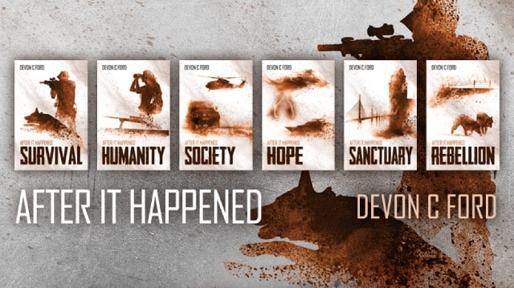
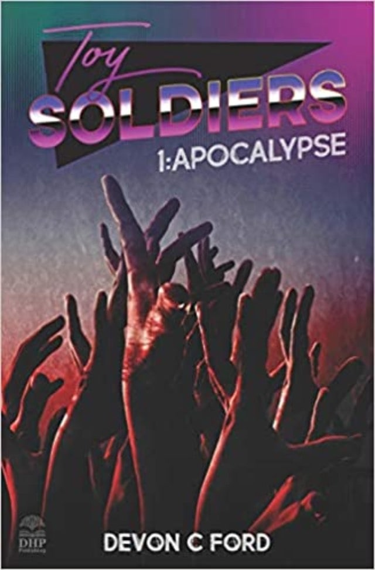

At Pendragon Works we’re forging a new way to easier connect Filmmakers with exciting original Stories.
Combining their background and experience in production, development, performance and legal, the Pendragon Works team have an eye for a good story and talented writers. We know first hand the challenge of conjuring up new compelling stories for ever hungry audiences.
Recent projects
-

After it Happened
Screenplay by Devon C. Ford
Screen adaptation based on the successful online book series and audio book, by Devon C. Ford, one of Britain’s premier post-apocalyptic writers.
Few stories evoke such savagely realistic imagery in a created universe of an unknowable nature.
Set in the UK in the immediate aftermath of a mysterious illness which swept the country and left millions dead, the series follows the trials facing a reluctant hero, Dan, and the group that forms around him. They must battle the elements, find sufficient supplies and equipment to survive, and protect themselves against the most destructive force on the planet: other people.
Pitch bible, treatment and sample scenes available on request.
-

Toy Soldiers
Screenplay by Devon C. Ford
Screen adaptation of the successful nostalgic 1980’s Zombie apocalypse book and audio series, Toy Soldiers, by Devon C. Ford.
“Rural England, 1989. A young boy living a nightmare. A bioweapon escaped from a test laboratory. A squadron of British Army cavalry troopers cut off from central leadership. The outbreak of the virus turned the residents of the UK into flesh hungry monsters, but some people just refuse to consider failure.”
-

Isle of No'man
Screenplay by Martin Dixon